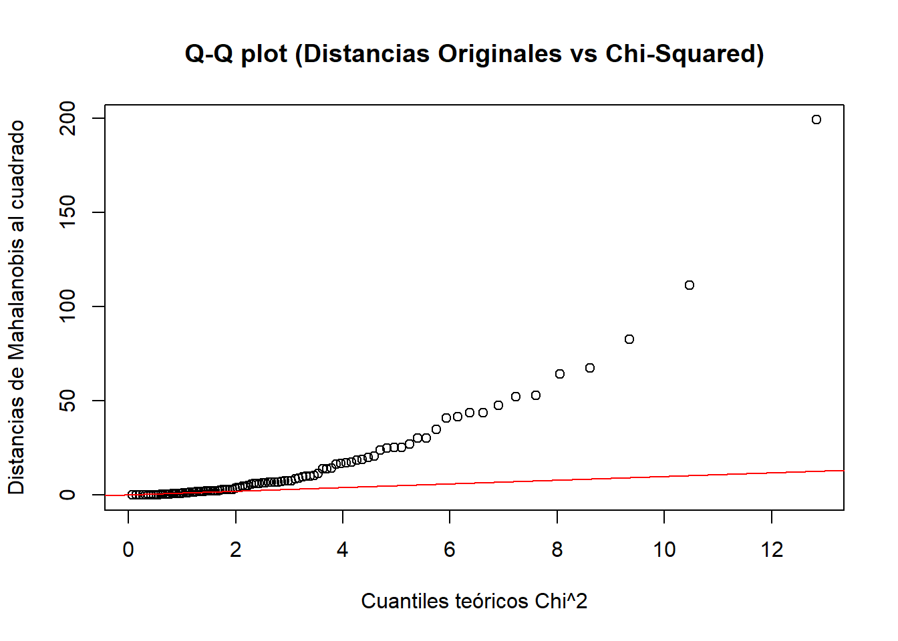

set.seed(123)
X1 <- rnorm(50, mean = 5, sd = 1)
X2 <- rnorm(50, mean = 10, sd = 2)
X3 <- rnorm(50, mean = 15, sd = 3)
X4 <- rnorm(50, mean = 20, sd = 4)
X5 <- 2 * X1 + 3 * X2
data <- data.frame(X1, X2, X3, X4, X5)
X <- as.matrix(data)Ejercicios de estadística multivariante, parte I
20582- Análisis de Datos para el GMAT
Dídac Capó Peña:
Problema 1
Simula un conjunto de datos que tenga 5 variables \(X_1, X_2, X_3, X_4, X_5\), con 50 observaciones que sigan distribuciones normales con diferentes medias y varianzas cada una. Establece que una o más de las variables sea una combinación lineal de las otras. Por ejemplo, puedes definir que: \(X_5 = 2X_1 + 3X_2\). Verifica que se cumple el teorema de la dimensión.
Respuesta
Creamos el data:
Verificación del teorema de la dimensión. Para ello definimos la matriz de covarianzas:
n=50
S = (n-1)/n*cov(X)
S X1 X2 X3 X4 X5
X1 0.84009052 -0.05893843 0.07838348 -0.41355714 1.503366
X2 -0.05893843 3.21375183 -0.82206460 -1.03270278 9.523379
X3 0.07838348 -0.82206460 8.63285376 -0.08383904 -2.309427
X4 -0.41355714 -1.03270278 -0.08383904 13.59008299 -3.925223
X5 1.50336575 9.52337863 -2.30942683 -3.92522261 31.576867Comprovem el rang de la matriu \(S\)
rango <- qr(S)$rank
rango[1] 4El rango de la matriz es: 4. El teorema de la dimensión se cumple, ya que el rango es inferior al número de variables porque X5 es una combinación lineal de X1 y X2.
Problema 2
Simula un conjunto de datos \(X\) con 4 variables y 50 observaciones que sigan distribuciones normales con diferentes medias y varianzas.
Define una matriz de transformación lineal \(T\) de escalamiento (solo tiene valores diferentes de cero en su diagonal, lo que implica que cada variable se escala de manera independiente sin interacción con las otras variables), de la siguiente forma:
Escala la primera variable por 2.
Escala la segunda variable por 0.5.
Escala la tercera variable por 1.5.
Mantener la cuarta variable sin cambios.
Ahora, transforma la matriz de datos \(X\) en una nueva matriz \(Y = X T\). Calcula el vector de medias \(\mu_Y\) de las variables transformadas y la matriz de covarianzas \(\Sigma_Y\). Verifica tus resultados con las funciones colMeans() y cov() de R.
Respuesta
Utilizamos las variables del apartado anterior \(X_1,X_2,X_3,X_4\) y las metemos en una matriz llamada M, usamos esta notación para no sobreescribir la matriz del apartado anterior
data2 <- data.frame(X1, X2, X3, X4)
M <- as.matrix(data2)Definimos la matriz de transformación lineal T como nos pide el enunciado y con dimensiones \(4\times4\)
T <- diag(c(2, 0.5, 1.5, 1))Transformamos la matriz de datos M en Y usando \(Y = \cdot T\)
Y <- M %*% TCalculamos el vector de medias de las variables transformadas Y, sabemos por teoria que \(\overline{y}^t = \overline{x}^t T\)
Calculamos el vector de medias de \(M\):
m_barra <- colMeans(M)Calculamos el vector de medias de \(Y\) de las dos maneras:
m_barraT <- t(m_barra)
y_barra = m_barraT %*% T
y_barra [,1] [,2] [,3] [,4]
[1,] 10.06881 5.146408 21.35745 20.15523y_barra2 <- colMeans(Y)
y_barra2[1] 10.068807 5.146408 21.357448 20.155227Vemos que coinciden.
Ahora calculamos la matriz de covarianzas de las variables transformadas Y, que sabemos que \(S_y=T^tST\)
Sb = cov(M)
S_y = T %*% Sb %*% T
S_y [,1] [,2] [,3] [,4]
[1,] 3.42894089 -0.06014125 0.2399494 -0.8439942
[2,] -0.06014125 0.81983465 -0.6291311 -0.5268892
[3,] 0.23994943 -0.62913107 19.8203275 -0.1283251
[4,] -0.84399417 -0.52688917 -0.1283251 13.8674316S_Y2 <- cov(Y)
S_Y2 [,1] [,2] [,3] [,4]
[1,] 3.42894089 -0.06014125 0.2399494 -0.8439942
[2,] -0.06014125 0.81983465 -0.6291311 -0.5268892
[3,] 0.23994943 -0.62913107 19.8203275 -0.1283251
[4,] -0.84399417 -0.52688917 -0.1283251 13.8674316Problema 3
Genera una matriz de datos simulados de tamaño \(100 \times 3\) con distribución normal multivariante.
Calcula la distancia de Mahalanobis para cada observación con respecto a la media del conjunto de datos.
Considera la matriz de transformación lineal \(T\) que mezcla las variables mediante rotaciones y escalamientos. Por ejemplo, puedes definir la matriz de transformación expresada de la siguiente forma:
\[T = \begin{pmatrix} 1.2 & 0.3 & 0.0 \\ 0.2 & 1.1 & 0.0 \\ 0.0 & 0.0 & 1.5 \end{pmatrix}\]
Aplique la transformación a la matriz de datos y calcule la distancia de Mahalanobis para cada observación con respecto a la media del conjunto de datos transformado.
Respuesta
set.seed(123)
mu <- c(0, 0, 0)
sigma <- matrix(c(1, 0.5, 0.3,
0.5, 1, 0.2,
0.3, 0.2, 1),
nrow = 3)
MV <- mvrnorm(n = 100, mu = mu, Sigma = sigma)
head(MV) [,1] [,2] [,3]
[1,] 1.7274309 -0.2613397 -0.5003054
[2,] 0.8246777 -0.5208991 0.1777259
[3,] -1.4013669 -1.0061999 -1.0952641
[4,] 0.2814421 -0.1579090 -0.3848261
[5,] -0.1559464 0.4811491 -0.7788577
[6,] -1.6765408 -1.1173591 -1.0030072Calcular la media y covarianza de \(MV\)
MV_barra <- colMeans(MV)
cov_MV <- cov(MV)Calcular las distancias de Mahalanobis para cada observación
dist_mahalanobis <- mahalanobis(MV, center = MV_barra, cov = cov_MV)
head(dist_mahalanobis) [1] 5.4818562 1.7200536 2.6308780 0.2672328 1.0547329 3.3556483Definir la matriz de transformación \(T_3\)
#
T_3 <- matrix(c(1.2, 0.3, 0.0,
0.2, 1.1, 0.0,
0.0, 0.0, 1.5), nrow = 3)Aplicar la transformación lineal a los MV
#
Y_3 <- MV %*% T_3
head(Y_3) [,1] [,2] [,3]
[1,] 1.99451518 0.05801247 -0.7504581
[2,] 0.83334354 -0.40805341 0.2665889
[3,] -1.98350030 -1.38709331 -1.6428962
[4,] 0.29035776 -0.11741149 -0.5772392
[5,] -0.04279099 0.49807469 -1.1682866
[6,] -2.34705663 -1.56440315 -1.5045107Calcular la media y covarianza de \(Y_3\)
Y_3_barra <- colMeans(Y_3)
cov_Y_3 <- cov(Y_3)Calcular las distancias de Mahalanobis para \(Y_3\)
dist_mahalanobis_Y_3 <- mahalanobis(Y_3, center = Y_3_barra, cov = cov_Y_3)
head(dist_mahalanobis_Y_3) [1] 5.4818562 1.7200536 2.6308780 0.2672328 1.0547329 3.3556483- ¿Son las distancias de Mahalanobis iguales antes y después de la transformación lineal? Explica.
Respuesta al apartado a
Sí, porque la distancia de Mahalanobis es invariante frente a transformaciones lineales invertibles de las variables.
- La distancia de Mahalanobis al cuadrado debería seguir una distribución \(\chi^2\) con \(p\) grados de libertad, donde \(p\) es el número de variables. Verifica si esto se cumple en tu caso. Justifica tu respuesta en función del test estadístico apropiado y un gráfico.
Respuesta al apartado b
Definimos las distancias al cuadrado:
dist_mahalanobis_cuadrado <- dist_mahalanobis^2La prueba de Kolmogorov-Smirnov (K-S) nos permite comparar la distribución empírica de las distancias de Mahalanobis al cuadrado con la distribución teórica \(\chi_3^2\)
ks.test(dist_mahalanobis_cuadrado, "pchisq", df = 3)
Asymptotic one-sample Kolmogorov-Smirnov test
data: dist_mahalanobis_cuadrado
D = 0.39797, p-value = 3.502e-14
alternative hypothesis: two-sidedComo el p-valor es menor a \(0.05\), rechazamos la hipótesis nula de que los datos siguen una distribución \(\chi_3^2\).
Graficar Q-Q plot para las distancias de Mahalanobis
qqplot(qchisq(ppoints(100), df = 3), dist_mahalanobis_cuadrado,
main = "Q-Q plot (Distancias Originales vs Chi-Squared)",
xlab = "Cuantiles teóricos Chi^2",
ylab = "Distancias de Mahalanobis al cuadrado")
abline(0, 1, col = "red") # Línea de referencia
Como los puntos del gráfico no se alinean a lo largo de la línea de referencia, esto indica que los datos no siguen la distribución teórica esperada, \(\chi_3^2\).